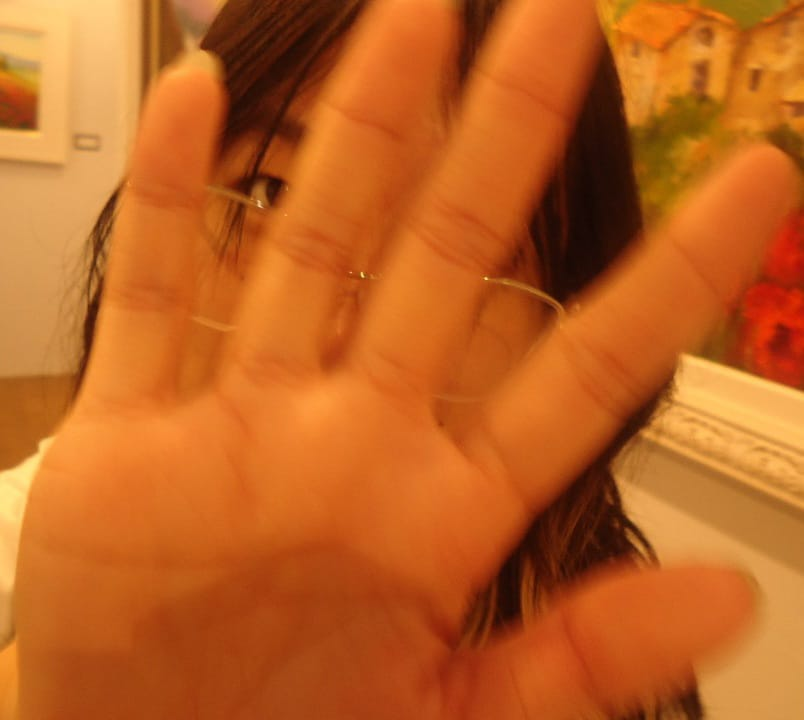

"Queria poder ficar em seu abraço o dia todo, triste eu não poder."
"Acho que nem em uma constelação teria tanto brilho como tem em seu sorriso, E NO SUE SOTAQUEE (ECXATAMENTI)"
"De certa forma queria esquecer do meu mundo e me perder enquanto olho para os seus olhos."

"Este ser está sendo procurada por diversos danos morais e sentimentais por causar saudades constante!!"
1 - adoro teu jeito de ser
2 - amo cada parte sua, do pé a cada ponta de fio de cabelo teu.
3 - seus olhos me encantam de um jeito inexplicável, eles parecem uma porta para um muno inteiro desconhecido pela humanidade.
4 - seu jeito de ser e agir fazem eu perceber que amo a pessoa certa, cara de que forma poderia dizer que tenho muito orgulho de vc? acho que apenas dizendo que vc é uma pessoa incrÃvel
5 - você se preocupa comigo e eu valorizo isso, issoé bastante importante pra mim
6 - vc é um amor de pessoa tipo, quem não gosta de vc??
7 - Te amo porque vc é única.
8 - amo pois me faz sentir tropeços no coração, principalmente quando vc olha pra minha boca e depois me encara com um olhar lindo.
9 - amo quando seus olinhos fecham quando vc ri
10 - te amo pq seu abraço me traz paz, os cochicos na minha cabeça somem